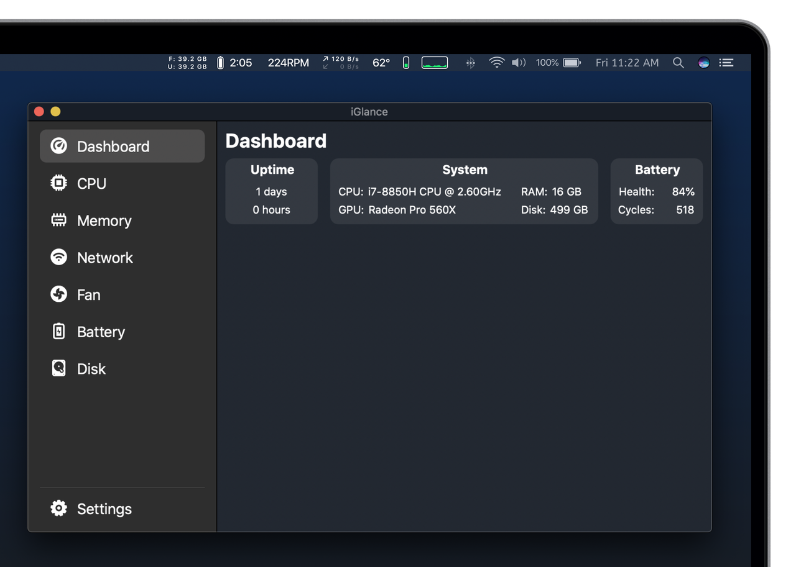
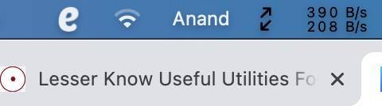
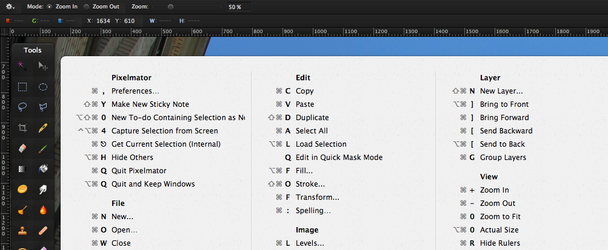
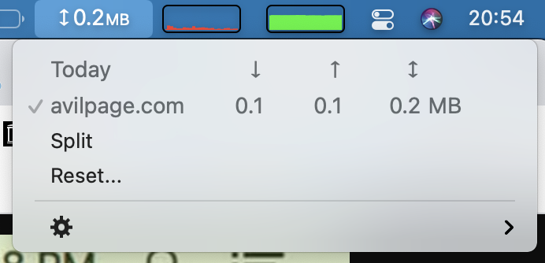
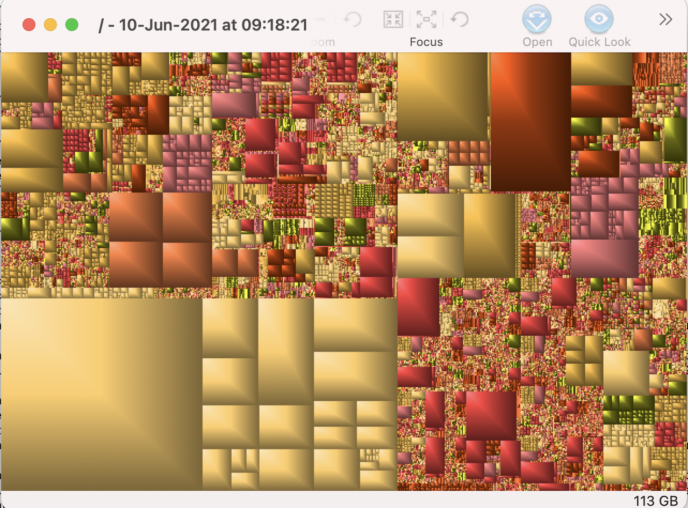

Lesser Know Useful Utilities For Mac
Introduction
When using Mac, there are few utilities which come in handy for day to day operations and also aid in productivity.
Here are some of the useful but lesser know utilities for mac.
iGlance

iGlance is a system monitor tool that shows all the stats right from the menu bar itself.
Debokee Tools

Wondering which network your Mac connected to? If you use multiple wireless networks, then Debokee Tools can show the connected wireless network name directly in the menu bar.
Espanso
Espanso is a text expanding tool that improves productivity across the system. We can set up shortcuts for frequently typed things like email, phone number etc so that we don't have to type them again and again.
Karabiner-Elements
Karabiner Elements allows users to customize keyboard via simple modifications, complex modifications, function key modifications etc.
Flycut
Flycut is a simple clipboard manager, stores history. When you want to copy/paste frequently, this comes in handy.
CheatSheet

Ever wondered what are the keybindings when using any application? With CheatSheet, we can just hold ⌘ key bit longer, and it will show all the available shortcuts in the application.
Bandwidth+

Bandwidth+ tracks network usage on Mac. If there are multiple networks, it gives detailed information about the network consumed on all the networks.
Grand Perspective

If Mac is running low on disk space, Grand Perspective shows a graphical view of the disk usage. It will be much easier to pinpoint large files that are consuming the disk and then clean them up.
Conclusion
These are some useful utilities for day to day usage. In the upcoming articles, lets learn about useful command line utilities that improve productivity on a daily basis.